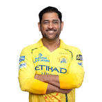
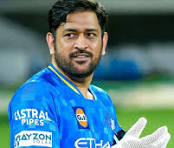
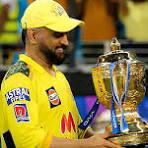

Mahendra Singh Dhoni, popularly known as MSD, is one of the greatest captains in the history of cricket. Born on July 7, 1981, in Ranchi, he is admired for his calm personality, sharp decision-making, and exceptional finishing abilities in limited-overs cricket. Under his leadership, India national cricket team won major international trophies, including the 2007 ICC T20 World Cup, the 2011 ICC Cricket World Cup, and the 2013 ICC Champions Trophy. Dhoni is also famous for his helicopter shot and outstanding wicketkeeping skills. Beyond international cricket, he led Chennai Super Kings to multiple IPL titles, becoming a legendary figure in Indian cricket. His dedication, humility, and leadership continue to inspire millions of fans around the world.
Apart from his achievements on the field, Mahendra Singh Dhoni is respected for his simplicity, discipline, and sportsmanship. He has inspired young cricketers with his ability to remain calm under pressure and make smart decisions during crucial moments of the game. Even after retiring from international cricket in 2020, Dhoni continues to influence the sport through the Indian Premier League and his mentorship of younger players. His journey from a small-town boy to one of the most successful cricket captains in the world proves that hard work, confidence, and determination can lead to extraordinary success.




| Year | Achievement |
|---|---|
| 2007 | Won ICC T20 World Cup as Captain |
| 2011 | Won ICC Cricket World Cup |
| 2013 | Won ICC Champions Trophy |
| 2008 | ICC ODI Player of the Year |
| 2018 | Padma Bhushan Award |
| 2023 | Led Chennai Super Kings to IPL Title |